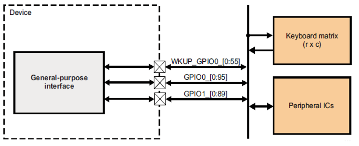
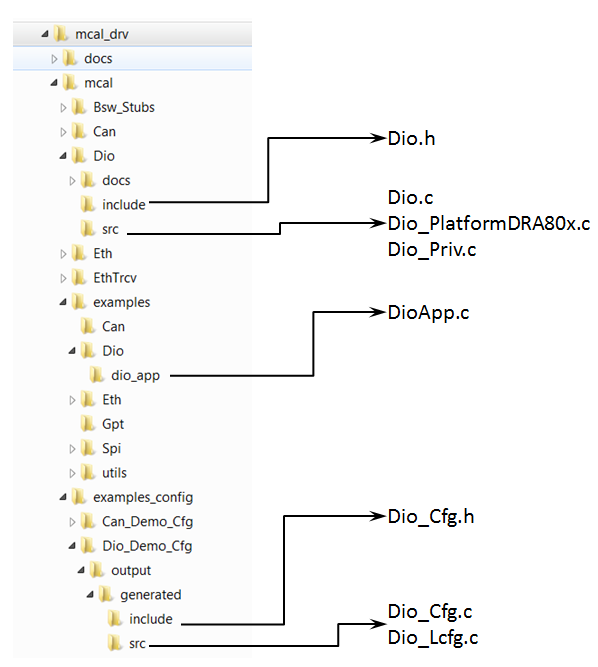

|
MCUSW
|
|
MCUSW
|
This document details AUTOSAR BSW DIO module implementation
The DIO module provides interfaces to external peripherals by abstracting the input and output pins on the microcontroller device as detailed in the AUTOSAR BSW DIO Driver Specification. Following sections highlight key aspects of this implementation which would be of interest to an integrator.
Please refer the DIO design, which is part of CSP.
The DIO driver provides an interface to external peripherals by abstracting the input and output pins on the microcontroller device. The DIO pins are general purpose in nature. TDA4x have multiple DIO driver instances. AM62X/AM62AX/AM62PX/J722S have one Wakeup domain and two Main Domain DIO driver instances.
32 Pins are grouped into a port and channelId corresponds to sequential number starting with 0 for wakeup domain 0 and pin 0, 144 for main domain 0 and pin 0, 288 for main domain 1 and pin 0
TDA4x can support up to 11 instances. These instances are generally associated with specific domain, e.g. wakeup, main domains. AM62X/AM62AX/AM62PX/J722S can support up to 3 instances. These instances are generally associated with specific domain, e.g. wakeup
Refer to TRM for more info.

In case of J721E/J7200, each Dio instance supports 9 banks of 16 DIO signals/pins or channels (2 in WKUP and 7 in Main domain). Please note in each instance there are some pins that are not pinned out and are reserved.
The mapping of pins in the different instances is shown in the following table. For this implementation the absolute numbering of channel ids starts from the Dio instance in the wakeup domain. Please refer TRM for more details.
| Instance | Pin Number | ChannelId | Port ID | Available/Not Available |
|---|---|---|---|---|
| WKUP_GPIO 0 | 0 | 0 | 0 | Available |
| : | : | : | : | Available |
| WKUP_GPIO 0 | 31 | 31 | 0 | Available |
| WKUP_GPIO 0 | 32 | 32 | 1 | Available |
| : | : | : | : | Available |
| WKUP_GPIO 0 | 63 | 63 | 1 | Available |
| WKUP_GPIO 0 | 64 | 64 | 2 | Available |
| : | : | : | : | Available |
| WKUP_GPIO 0 | 83 | 83 | 2 | Available |
| WKUP_GPIO 0 | 84 | x | x | Not Available |
| : | : | : | : | Not Available |
| WKUP_GPIO 0 | 143 | x | x | Not Available |
| WKUP_GPIO 1 | 0 | 144 | 3 | Available |
| : | : | : | : | Available |
| WKUP_GPIO 1 | 31 | 175 | 3 | Available |
| WKUP_GPIO 1 | 32 | 176 | 4 | Available |
| : | : | : | : | Available |
| WKUP_GPIO 1 | 63 | 207 | 4 | Available |
| WKUP_GPIO 1 | 64 | 208 | 5 | Available |
| : | : | : | : | Available |
| WKUP_GPIO 1 | 83 | 227 | 5 | Available |
| WKUP_GPIO 1 | 84 | x | x | Not Available |
| : | : | : | : | Not Available |
| WKUP_GPIO 1 | 143 | x | x | Not Available |
| GPIO 0 | 0 | 288 | 6 | Available |
| : | : | : | : | Available |
| GPIO 0 | 31 | 319 | 6 | Available |
| GPIO 0 | 32 | 320 | 7 | Available |
| : | : | : | : | Available |
| GPIO 0 | 63 | 351 | 7 | Available |
| GPIO 0 | 64 | 352 | 8 | Available |
| : | : | : | : | Available |
| GPIO 0 | 95 | 383 | 8 | Available |
| GPIO 0 | 96 | 384 | 9 | Available |
| : | : | : | : | Available |
| GPIO 0 | 127 | 415 | 9 | Available |
| GPIO 0 | 128 | x | x | Not Available |
| : | : | : | : | Not Available |
| GPIO 0 | 143 | x | x | Not Available |
| GPIO 1 | 0 | 432 | 10 | Available |
| : | : | : | : | Available |
| GPIO 1 | 31 | 463 | 10 | Available |
| GPIO 1 | 32 | 464 | 11 | Available |
| : | : | : | : | Available |
| GPIO 1 | 35 | 467 | 11 | Available |
| GPIO 1 | 36 | x | x | Not Available |
| : | : | : | : | Not Available |
| GPIO 1 | 143 | x | x | Not Available |
| GPIO 2 | 0 | 576 | 12 | Available |
| : | : | : | : | Available |
| GPIO 2 | 31 | 607 | 12 | Available |
| GPIO 2 | 32 | 608 | 13 | Available |
| : | : | : | : | Available |
| GPIO 2 | 63 | 639 | 13 | Available |
| GPIO 2 | 64 | 640 | 14 | Available |
| : | : | : | : | Available |
| GPIO 2 | 95 | 671 | 14 | Available |
| GPIO 2 | 96 | 672 | 15 | Available |
| : | : | : | : | Available |
| GPIO 2 | 127 | 703 | 15 | Available |
| GPIO 2 | 128 | x | x | Not Available |
| : | : | : | : | Not Available |
| GPIO 2 | 143 | x | x | Not Available |
| GPIO 3 | 0 | 720 | 16 | Available |
| : | : | : | : | Available |
| GPIO 3 | 31 | 751 | 16 | Available |
| GPIO 3 | 32 | 752 | 17 | Available |
| : | : | : | : | Available |
| GPIO 3 | 35 | 755 | 17 | Available |
| GPIO 3 | 36 | x | x | Not Available |
| : | : | : | : | Not Available |
| GPIO 3 | 143 | x | x | Not Available |
| GPIO 4 | 0 | 864 | 18 | Available |
| : | : | : | : | Available |
| GPIO 4 | 31 | 895 | 18 | Available |
| GPIO 4 | 32 | 896 | 19 | Available |
| : | : | : | : | Available |
| GPIO 4 | 63 | 927 | 19 | Available |
| GPIO 4 | 64 | 928 | 20 | Available |
| : | : | : | : | Available |
| GPIO 4 | 95 | 959 | 20 | Available |
| GPIO 4 | 96 | 960 | 21 | Available |
| : | : | : | : | Available |
| GPIO 4 | 127 | 991 | 21 | Available |
| GPIO 4 | 128 | x | x | Not Available |
| : | : | : | : | Not Available |
| GPIO 4 | 143 | x | x | Not Available |
| GPIO 5 | 0 | 1008 | 22 | Available |
| : | : | : | : | Available |
| GPIO 5 | 31 | 1039 | 22 | Available |
| GPIO 5 | 32 | 1040 | 23 | Available |
| : | : | : | : | Available |
| GPIO 5 | 35 | 1043 | 23 | Available |
| GPIO 5 | 36 | x | x | Not Available |
| : | : | : | : | Not Available |
| GPIO 5 | 143 | x | x | Not Available |
| GPIO 6 | 0 | 1152 | 25 | Available |
| : | : | : | : | Available |
| GPIO 6 | 31 | 1183 | 25 | Available |
| GPIO 6 | 32 | 1184 | 26 | Available |
| : | : | : | : | Available |
| GPIO 6 | 63 | 1215 | 26 | Available |
| GPIO 6 | 64 | 1216 | 27 | Available |
| : | : | : | : | Available |
| GPIO 6 | 95 | 1247 | 27 | Available |
| GPIO 6 | 96 | 1248 | 28 | Available |
| : | : | : | : | Available |
| GPIO 6 | 127 | 1279 | 28 | Available |
| GPIO 6 | 128 | x | x | Not Available |
| : | : | : | : | Not Available |
| GPIO 6 | 143 | x | x | Not Available |
| GPIO 7 | 0 | 1296 | 29 | Available |
| : | : | : | : | Available |
| GPIO 7 | 31 | 1327 | 29 | Available |
| GPIO 7 | 32 | 1328 | 30 | Available |
| : | : | : | : | Available |
| GPIO 7 | 35 | 1331 | 30 | Available |
| GPIO 7 | 36 | x | x | Not Available |
| : | : | : | : | Not Available |
| GPIO 7 | 143 | x | x | Not Available |
Each Dio instance supports 9 banks of 16 DIO signals/pins or channels.
Please note in each instance there are some pins that are not pinned out and are reserved.
The mapping of pins in the different instances is shown in the following table. For this implementation the absolute numbering of channel ids starts from the Dio instance in the wakeup domain. Please refer TRM for more details.
| SoC | Instance | Pin Number | ChannelId | Port ID | Available/Not Available |
|---|---|---|---|---|---|
| AM62X/AM62AX/AM62PX/J722S | MCU_GPIO 0 | 0 - 23 | 0 - 23 | 0 | Available |
| AM62X/AM62AX/AM62PX/J722S | Main_GPIO 0 | 0 - 31 | 144 - 175 | 1 | Available |
| AM62X/AM62AX/AM62PX/J722S | Main_GPIO 0 | 32 - 63 | 176 - 207 | 2 | Available |
| AM62X/AM62AX/AM62PX/J722S | Main_GPIO 0 | 64 - 91 | 208 - 235 | 3 | Available |
| AM62X/AM62AX/AM62PX/J722S | Main_GPIO 1 | 0 - 31 | 288 - 319 | 4 | Available |
| AM62X/AM62AX/AM62PX/J722S | Main_GPIO 1 | 32 - 51 | 320 - 339 | 5 | Available |
The Dio Driver implementation supports multiple configuration variants (refer section Introduction), the driver expects generated Dio_Cfg.h to be present as (File Structure). Please refer (Build) to specify path to generated configuration. The associated dio driver configuration generated files Dio_Cfg.c and Dio_Lcfg.c to be present as show (File Structure)
The generated configuration files should not be modified manually. The config tool Elektrobit Tresos should be used to modify the configuration files.
The following section details on the un-supported features and additional features added.
As the microcontroller currently doesn't support direct read back, the AUTOSAR requirement pertaining to direct read back has not been implemented.
This structure contains all post-build configurable parameters of the DIO driver. As post-build configuration is not supported, this structure has not been used in this implementation.
This driver implementation introduces configurable options listed below
| Name | DioDeviceVariant |
| Description | Used to specific family of devices, the variant of the device being used will belong one or more family of devices. Please refer (Supported Devices) to determine the family of device. Based on the family, the number of instances of Dio module supported could vary. |
| Container Name | DioGeneral |
| Type | Enumeration |
| Range | TDA4x, AM62x, AM62Ax, AM62Px etc… (new family of devices could be added in future) |
| Value Configuration Class | VARIANT-PRE-COMPILE |
| Name | DIO_WRITE_PORT_EVENT_ID |
| Description | This is the event ID for Dem event in the Dio_WritePort() API |
| Container Name | DioDemEventParameterRef |
| Type | IDENTIFIABLE |
| Value Configuration Class | VARIANT-PRE-COMPILE |
| Name | DIO_WRITE_CHANNEL_EVENT_ID |
| Description | This is the event ID for Dem event in the Dio_WriteChannel() API. |
| Container Name | DioDemEventParameterRef |
| Type | IDENTIFIABLE |
| Value Configuration Class | VARIANT-PRE-COMPILE |
| Name | DioRegisterReadbackApi |
| Description | Adds / Removes service API DioRegisterReadbackApi () Safety feature : Check some of the critical registers (corruption of which could potentially break functionality of the Dio) The expected usage: Periodically this service API is invoked and checked for data-consistency. i.e. the values of the registers checked in this API are not expected to change. Also refer (Dio_RegisterReadback) |
| Container Name | DioGeneral |
| Type | Boolean |
| Value Configuration Class | VARIANT-PRE-COMPILE |
To protect HW from un-intended re-configuration (corrupted / fault hardware), some of the critical registers are read periodically and checked. By an entity outside the driver, the values of these registers are not expected to change. This is an optional service API, which can be turned OFF (refer section DioRegisterReadbackApi)
| Description | Comments | |
| Service Name | Dio_RegisterReadback | Can potentially be turned OFF (Refer to Design Document provided in CSP) |
| Syntax | Std_ReturnType Dio_RegisterReadback(Dio_ChannelType ChannelId, Dio_RegisterReadbackType *DioRegRbPtr) | Returns critical DIO registers of associated DIO module |
| Service ID | NA | |
| Sync / Async | Sync | |
| Reentrancy | Non Reentrant | |
| Parameter in | ChannelId | Channel Identifier |
| Parameters out | DioRegRbPtr | A pointer of type Dio_RegisterReadbackType, which holds the read back register values |
| Return Value | Standard unsigned integer | E_OK or E_NOT_OK in case of NULL buffer pointer. |
The Driver doesn’t register any interrupts handler (ISR), it is expected that consumer of this driver registers the required interrupt handler.
The driver doesn't configure the functional clock and power for the Dio modules. Its expected that SBL powers-up the required modules. Please refer SBL documentation.
Please follow steps detailed in section (Build) to build library or example.
Please follow the steps detailed in section (Running Examples) to build and run example. Back To Top
Various objects of this implementation (e.g. variables, functions, constants) are defined under different sections. The linker command file at (Examples Linker File (Select memory location to hold example binary)) defines separate section for these objects. When the driver is integrated, its expected that these sections are created and placed in appropriate memory locations. (Locations of these objects depend on the system design and performance needs)
| Section | DIO_CODE | DIO_CONST | DIO_CONFIG |
| DIO_VAR_CONST_UNSPECIFIED_SECTION (.data) | USED | ||
| DIO_VAR_CONST_32_SECTION (.data) | USED | ||
| DIO_FUNC_TEXT_SECTION | USED | ||
| DIO_CONFIG_DATA_SECTION_NON_CONST | USED | ||
| DIO_CONFIG_DATA_SECTION_CONST | USED |
This driver implementation has been validated with cache enabled. For optimal performance it is recommended to place (Memory Mapping) sections in cache enabled memory area.
This implementation depends on the DET in order to report development errors and can be turned OFF. Refer section (Development Error Reporting) for detailed error codes.
This implementation requires 1 level of exclusive access to guard critical sections. Invokes SchM_Enter_Dio_DIO_EXCLUSIVE_AREA_0 (), SchM_Exit_Dio_DIO_EXCLUSIVE_AREA_0 () to enter critical section and exit.
In the example implementation (File Structure SchM_Dio.c) , all the interrupts on CPU are disabled.

Development errors are reported to the DET using the service Det_ReportError(), when enabled. The driver interface (Dio.h File Structure) lists the SID
| Type of Error | Related Error code | Value (Hex) |
| Invalid channel name requested | DIO_E_PARAM_INVALID_CHANNEL_ID | 0x0A |
| Parameter is NULL Pointer | DIO_E_PARAM_CONFIG | 0x10 |
| Invalid Port Nam3 | DIO_E_PARAM_INVALID_PORT_ID | 0x14 |
| API parameter checking: invalid channel | DIO_E_PARAM_INVALID_GROUP | 0x1F |
| NULL Pointer | DIO_E_PARAM_POINTER | 0x20 |
Production error are reported to DEM via the service DEM_ReportErrorStatus(). In addition to standard errors, this implementation reports "DIO_WRITE_CHANNEL_EVENT_ID" and "DIO_WRITE_PORT_EVENT_ID" for DEM events in channel and port writes.
DIO module does not support a distinct I/O loopback mode. However, it is possible to support I/O checking using normal functionality. To do this software generates output and reads back and checks for the same value in the input registers. The DIO MCAL driver provides the API - Dio_WritePort() and Dio_ReadPort() to implement this diagnostic feature.
Software Readback of Written Configuration ensures that the configuration register are written with the expected value. Periodic readback of configuration registers can provide a diagnostic for inadvertent writes to these registers.
The DIO MCAL driver provides the API - Dio_RegisterReadback() to readback static and written configuration registers to implement this diagnostic feature.
The AUTOSAR BSW Dio Driver specification details the APIs required for Dio Driver. Please refer to (Refer to Design Document provided in CSP) for detailed API description. Also refer to (Non Standard Service APIs) for non-standard APIs which are included in this implemented.
Refer API Documentation for details Back To Top
The example application demonstrates use of Dio module, the list below identifies key steps performed the example. The configuration file is present at (File Structure)
Sample Application - STARTS !!! DIO MCAL Version Info --------------------- Vendor ID : 44 Module ID : 120 SW Major Version : 0 SW Minor Version : 1 SW Patch Version : 0 Test A. Write and Read Channel ------------------------------ Channels written Channel read DIO_PinLevel[0] = 0 Channel read DIO_PinLevel[1] = 1 Channel read DIO_PinLevel[2] = 0 DIO Service API Read-back Channel Succeeds !!! Main Domain Channels written Channel read DIO_PinLevel[0] = 0 Channel read DIO_PinLevel[1] = 1 Channel read DIO_PinLevel[2] = 0 DIO Service API Read-back Channel Main Domain Succeeds !!! DIO Test A :Service API: Write/Read Channel completed Test B. Write and Read Channel Group ------------------------------------ DIO Service Read/Write Channel Group Read-back Succeeds !!! DIO Test B : Service API : Write/Read Channel Group completed Test C. Write and Read Port --------------------------- DIO Service API Read-Back Port succeeds !!! DIO Service API Read-Back Port Main Domain succeeds !!! DIO Test C : Service API: Write/Read Port completed Test D. Flip Channel ---------------------- Pin Value Before Flip: 0 Pin Value After Flip: 1 DIO Test D : Service API: Flip Channel completed Pin Value Before Flip: 1 Pin Value After Flip: 0 DIO Test D : Service API: Flip Channel Main Domain completed Test E. Dio_RegisterReadback ---------------------- DIO register readback compare Passed!! DIO register readback compare Main Domain Passed!! DIO Test E : Service API: Register Read-back completed DIO Stack Usage: 784 bytes ---------------------------------- DioApp: Sample Application - Completes successfully !!!
 1.8.6
1.8.6